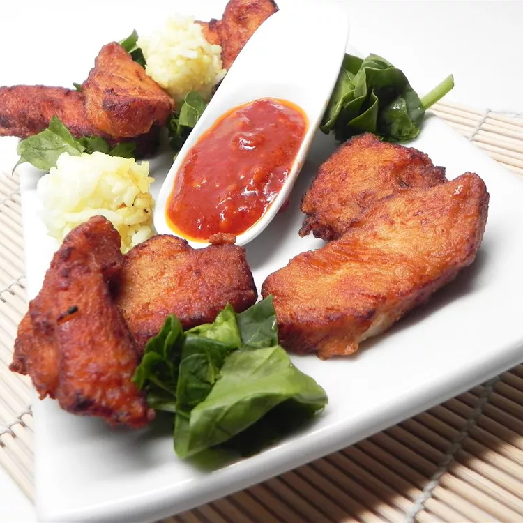

Chicken Karaage

Description
Try this simple yet delicious chicken karaage recipe for Japanese-style fried chicken flavored
with ginger, garlic, sake, and soy sauce. Serve as an appetizer or with rice and veggies to make
a yummy meal. It even tastes good cold; my mom used to make this to take with us on picnics.
Ingredients
- 2 tablespoons soy sauce
- 1 tablespoon sake (Japanese rice wine)
- 2 teaspoons grated fresh ginger
- 1 ½ pounds boneless, skinless chicken breasts, cut into bite-size pieces
- 2 cups vegetable oil for frying
Steps
-
Combine soy sauce, sake, and ginger in a large bowl. Add chicken; turn to coat. Cover with
plastic wrap and marinate in the refrigerator for 30 minutes.
- Heat oil in a deep-fryer or large saucepan to 350 degrees F (175 degrees C).
- Place cornstarch in a large resealable plastic bag. Add chicken; seal bag and toss until chicken is
coated with cornstarch.
- Fry chicken in batches until golden brown and juices run clear, 2 to 3 minutes.
Drain on paper towels or on a wire rack.
Tips
Please be sure to use regular rice wine (sake) for this recipe. Don't confuse it with
sweet rice wine (mirin) or rice vinegar!